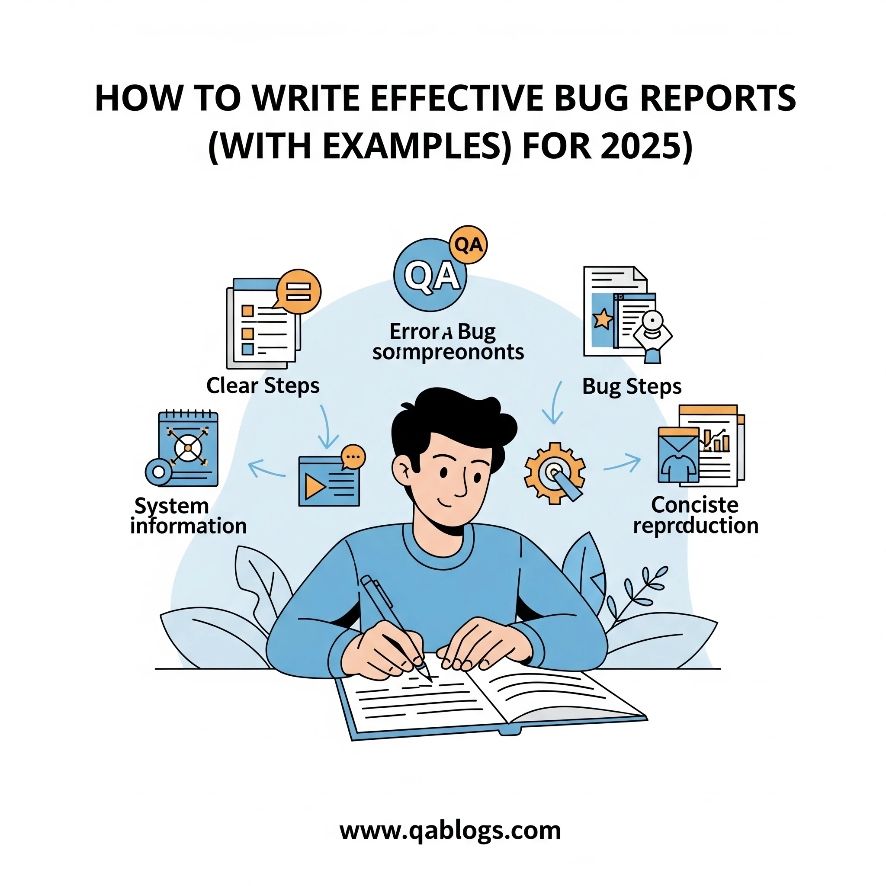

How to Write Effective Bug Reports (With Examples)

Key Takeaways
- Clear and actionable bug reports are essential for efficient software development and high-quality deliverables.
- Effective bug reports must include a specific title, detailed steps to reproduce, clear expected vs. actual results, environment details, and visual evidence.
- Properly classifying bug severity and priority is crucial for guiding development teams and ensuring timely fixes.
- Leveraging dedicated bug tracking tools (e.g., Jira, TestRail) and adopting best practices like using templates can significantly streamline the reporting process.
- Mastering bug reporting skills fosters better collaboration between QA and development, leading to faster issue resolution and improved user experience.
In the world of software development, bugs are inevitable. No matter how meticulous your coding or testing process is, issues will arise—and when they do, clear and actionable bug reports are essential for swift resolution. A well-written bug report not only helps developers understand the problem but also ensures that QA engineers, product managers, and stakeholders can collaborate effectively to deliver high-quality software.
Unfortunately, poorly written bug reports are all too common. Ambiguous descriptions, missing details, or irrelevant information can lead to confusion, delays, and even unresolved issues. In this blog post, we’ll explore how to write effective bug reports, complete with examples, best practices, and tips to ensure your reports stand out. Whether you’re a seasoned QA professional or just starting out, these insights will help you create bug reports that drive results.
Why Writing Effective Bug Reports Matters
Bug reports are the bridge between testers and developers. They provide critical information about defects, enabling teams to identify root causes, prioritize fixes, and maintain software quality. According to a study by IBM , fixing a bug in production can cost up to 100 times more than catching it during development. This underscores the importance of clear communication through effective bug reporting.
A poorly written bug report can waste time, frustrate developers, and delay releases. On the other hand, a well-crafted report accelerates the debugging process, fosters collaboration, and ultimately improves the end-user experience. Let’s dive into how you can master this crucial skill.
Key Elements of an Effective Bug Report
An effective bug report should be clear, concise, and actionable . Here are the essential components every bug report should include:
1. Title: Be Specific and Descriptive
The title is the first thing anyone sees, so make it count. It should summarize the issue succinctly while providing enough context.
Good Example: "Login Button Fails to Respond After Entering Invalid Credentials"
Bad Example: "Login Issue"
A descriptive title helps developers quickly grasp the nature of the problem without needing to dig deeper.
2. Steps to Reproduce: Provide a Clear Path
Detailing the steps to reproduce the bug is crucial. Developers need to replicate the issue to diagnose and fix it.
Format :
- Navigate to the login page.
- Enter invalid credentials (e.g., username: wronguser, password: wrongpass).
- Click the “Login” button.
- Observe that the button becomes unresponsive.
Clear, numbered steps eliminate ambiguity and ensure consistency.
3. Expected vs. Actual Results: Highlight the Discrepancy
Clearly state what you expected to happen versus what actually occurred.
Expected Result : "The system should display an error message stating 'Invalid credentials.'"
Actual Result : "The login button becomes unresponsive, and no error message appears."
This comparison makes the issue easy to understand and validate.
4. Environment Details: Include Context
Provide information about the environment where the bug was found, including:
- Operating System (e.g., Windows 10, macOS Ventura)
- Browser/Device (e.g., Chrome v118, iPhone 14 Pro)
- Application Version (e.g., v2.3.1)
Without this context, developers may struggle to reproduce the issue in their own environments.
5. Screenshots and Videos: Visual Evidence
Visuals are worth a thousand words. Attach screenshots, GIFs, or screen recordings to illustrate the problem.
Tip : Use tools like Snagit , Loom , or Jira’s built-in capture feature to create visual evidence.
Example : A GIF showing the login button freezing after clicking it adds clarity to the report.
6. Severity and Priority: Guide Decision-Making
Classify the bug based on its impact and urgency:
- Severity : How critical is the issue? (e.g., Critical, High, Medium, Low)
- Priority : How quickly does it need to be fixed? (e.g., P1, P2, P3)
For instance, a broken login feature might be classified as Critical/P1 , while a minor UI misalignment could be Low/P3 .
Real-World Example of an Effective Bug Report
Here’s an example of a well-written bug report:
Title : "Submit Button Does Not Work in Safari on Checkout Page"
Steps to Reproduce :
- Open Safari browser (v16.4) on macOS Ventura.
- Navigate to the checkout page.
- Fill out all required fields.
- Click the “Submit Order” button.
Expected Result : The order should be submitted successfully, and a confirmation message should appear.
Actual Result : The submit button does nothing, and no confirmation message is displayed.
Environment :
- OS: macOS Ventura 13.3
- Browser: Safari v16.4
- App Version: v3.2.0
Attachments :
- Screenshot of the frozen submit button.
- Screen recording of the issue.
Severity : High
Priority : P1
This example includes all the necessary elements, making it easy for developers to understand and address the issue.
Common Pitfalls to Avoid
Even experienced testers can fall into traps when writing bug reports. Here are some common mistakes and how to avoid them:
- Vague Descriptions : Avoid generic terms like “it doesn’t work.” Instead, describe exactly what happens.
- Missing Steps : Always include detailed steps to reproduce the issue.
- Overloading with Irrelevant Info : Stick to the facts—don’t overwhelm readers with unnecessary details.
- Skipping Visuals : A picture or video can often clarify issues faster than text alone.
- Unclear Severity/Priority : Misclassifying bugs can lead to misaligned priorities and delays.
Tools to Streamline Bug Reporting
Several tools can simplify and enhance the bug-reporting process:
- Jira : Widely used for tracking bugs and managing workflows.
- TestRail : Integrates test case management with bug tracking.
- BugHerd : Allows testers to annotate websites directly for visual bug reporting.
- Zephyr : Offers robust test management and bug-tracking capabilities.
Using these tools ensures consistency and improves collaboration across teams.
Comparison: Good vs. Bad Bug Reports
| Good Bug Report | Bad Bug Report | |
|---|---|---|
| Title | "Submit Button Unresponsive in Safari" | "Checkout Page Broken" |
| Steps to Reproduce | Detailed, step-by-step instructions | Vague or missing steps |
| Expected vs. Actual | Clear comparison | Ambiguous description |
| Environment | Includes OS, browser, app version | Missing or incomplete |
| Attachments | Screenshots, videos | No visuals |
This comparison highlights the difference between a report that empowers developers and one that creates frustration.
Practical Tips for QA Professionals
- Collaborate Early : Share draft reports with developers to ensure clarity and alignment.
- Use Templates : Standardize your bug reports with predefined templates to save time and ensure completeness.
- Prioritize Impact : Focus on bugs that affect core functionality or user experience first.
- Stay Objective : Avoid emotional language like “this is terrible” or “how did it happen?”
- Follow Up : Verify fixes and update the status of resolved bugs promptly.
Frequently Asked Questions about Bug Reports
What are the common pitfalls to avoid when writing bug reports?
Common pitfalls include vague descriptions, missing steps to reproduce, overloading the report with irrelevant information, skipping visual evidence like screenshots or videos, and unclear severity/priority classifications. Avoiding these ensures clarity and efficiency.
What tools can help streamline the bug reporting process?
Several tools can enhance bug reporting, such as Jira for comprehensive tracking, TestRail for test case management integration, BugHerd for direct website annotation, and Zephyr for robust test management. These tools ensure consistency and improve team collaboration.
Why is it important to write effective bug reports?
Effective bug reports are crucial because they serve as the primary communication bridge between testers and developers. They provide clear, actionable information needed to identify, prioritize, and resolve defects swiftly, significantly reducing the cost and time associated with fixing issues later in the development cycle or in production.
Conclusion: Elevate Your Bug Reporting Skills
Writing effective bug reports is both an art and a science. By following best practices—like crafting clear titles, providing detailed steps, and including visual evidence—you can streamline the debugging process and contribute to higher-quality software. Remember, a great bug report isn’t just about pointing out problems; it’s about fostering collaboration and driving solutions.
Are you ready to take your bug-reporting skills to the next level? Start implementing these tips today, and watch how they transform your team’s efficiency and effectiveness.
Join Our Community of QA Professionals
Get exclusive access to in-depth articles, testing strategies, and industry insights. Stay ahead of the curve with our expert-curated content delivered straight to your inbox.
Nikunj Mistri
Founder, QA Blogs
About the Author